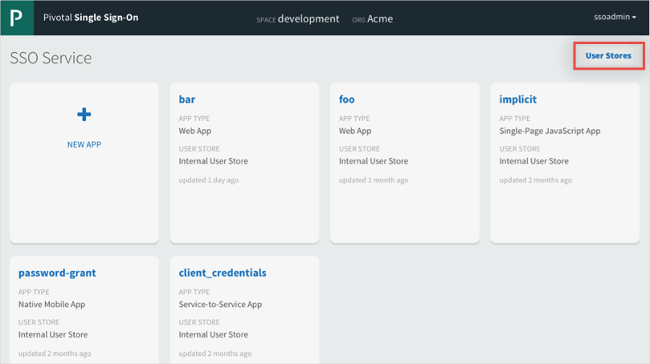
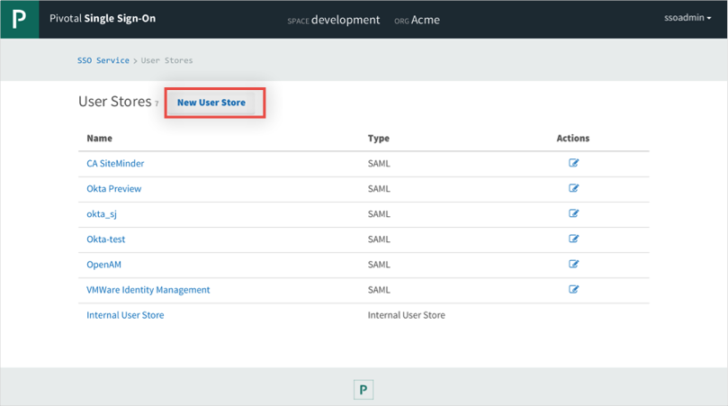
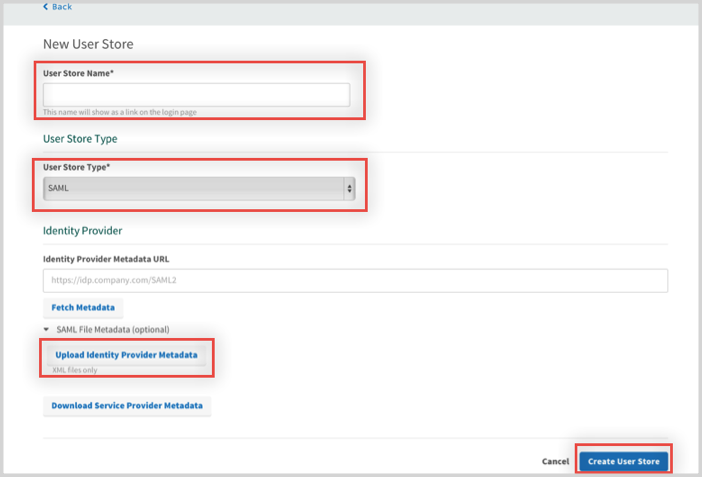
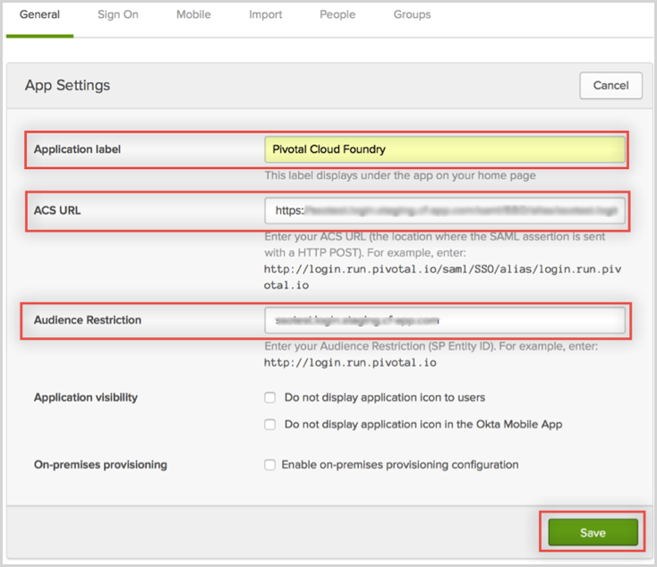

Log in to Pivotal Cloud Foundry as an administrator.
Click User Stores.

Click New User Store.

On the New User Store page, enter the following:
Enter a User Store Name.
Select SAML from the User Store Type dropdown menu.
Copy then save the following file as an .xml file then upload it to Pivotal Cloud Foundry by selecting Upload Identity Provider Metadata.
Click Create User Store.

In Okta, select the General tab for the Pivotal Cloud Foundry app and enter the following:
Click Save.

Done!
Notes:
IdP-initiated flows and SP-initiated flows are supported.